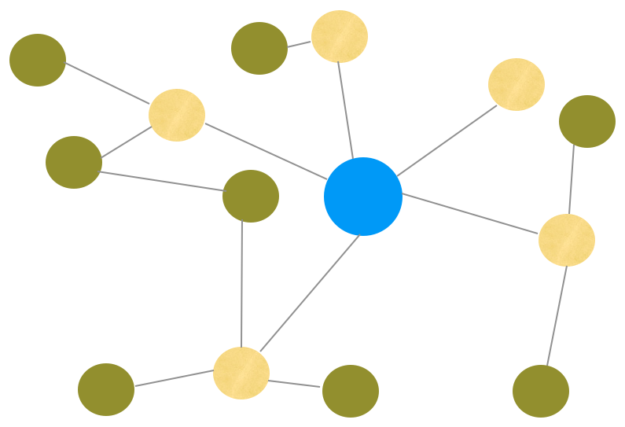

Drupal is awesome!
No REALLY!
Drupal is awesome!
Drupal is awesome if you are an end user!
Powerful admin interface
Drupal is awesome if you are a sales guy!
Well known brand
Drupal sucks if you are a developer!
Drupal is CMS 1st, development framework 2nd
This is a legitimate prioritization for their users
Drupal developer nightmares ..
- .. no clean separation of configuration, logic and content
- .. no clean deployment and staging concept
- .. inconsistent cache layers
- .. function callback AOP is not every ones cup of tea
- .. lots of legacy baggage
- .. NIH (not invented here) syndrom
Do we also suffer from NIH?
- Focus on solving core issues of Drupal
- Based ourselves as much on standard tools and specs
- Deliver value within a reasonable time
CMF = Content Management Framework
- In other words: its a toolbox to create your own custom CMS
- Not a one size fits all, but increase code sharing
- Imagine Diem, Sympal, Apostrophe all build on the same content foundation
The Symfony CMF project makes it easier for developers to add CMS functionality to
applications built with the Symfony2 PHP framework. Key development principles for the provided
set of bundles are scalability, usability,
documentation and testing
Data in a CMS is mostly unstructured
RDBMS are not a good fit, hurray for NoSQL
CMS often organize content as a tree/graph
Most NoSQL not a good fit, hurray for Graph DBs

CMS should be able to store content versions
Complexity shouldn't overwhelm developers
Need a solution that can scale both from small to large projects and we want to get somewhere within 12 months!
Enter Doctrine PHPCR ODM
PHP Content Repository + Doctrine ODM
PHPCR (aka PHP-ified JCR specification)
Works like MongoDB or CouchDB ODM, but also includes a tree/graph, versioning API

PHPCR provides a standardized API that can be used by any PHP content management system to interface with any content repository.
PHPCR implementations
- Jackalope
- Davex (Jackrabbit) transport layer
- Doctrine DBAL transport layer
- Midgard2 PHPCR
- ..
PHPCR has been submitted to the JCR spec at the request of David Nüschler, JCR spec lead
Workspaces
- Multiple workspaces, each with its own name and root node
- Is similar to a Unix file system structure
- Each workspace is independent
Nodes
- Can be created, deleted, modified, copied...
- Are identified by their path (*)
- ex. “/my/path/under/water/fish”
- Are typed using namespaced names
- nt:unstructured, nt:folder, nt:file ...
Node mixins
- A mixin node type can be assigned to a node during that node's lifetime
- mix:referenceable implies availability of property
- mix:versionable implies availability of properties
- jcr:versionHistory, jcr:predecessors, jcr:baseVersion, jcr:isCheckedOut, jcr:mergeFailed properties)
- ...
Properties
- Use namespaced names
- jcr:created, jcr:mimeType, phpcr:class
- Use one of the several type
- STRING, URI, BOOLEAN, LONG, DOUBLE, DECIMAL, BINARY, DATE, NAME, PATH, WEAKREFERENCE, REFERENCE
PHPCR

Document class
namespace Foo;
use Doctrine\ODM\PHPCR\Mapping as PHPCR
/** @PHPCR\Document(alias="bar", repositoryClass="Foo\BarRepository") */
class Bar
{
/** @PHPCR\Id(strategy="repository") */
public $id;
/** @PHPCR\Children */
public $children;
/** @PHPCR\String(name="name") */
private $name;
public function getName()
{
return $this->name;
}
public function setName($name)
{
$this->name = $name;
}
}
Document repository (optional)
namespace Foo;
use Doctrine\ODM\PHPCR\DocumentRepository,
Doctrine\ODM\PHPCR\Id\RepositoryIdInterface;
class BarRepository
extends DocumentRepository
implements RepositoryIdInterface
{
/**
* Generate a document id
*
* @param Bar $document
* @return string
*/
public function generateId(Bar $document)
{
return '/'.$document->getName();
}
}
CRUD API
// Create
$document = new Foo\Bar();
$document->setName($name)
$documentManager->persist($document);
$documentManager->flush();
$id = $document->id;
// Read
$repo = $documentManager->getRepository('Foo\Bar');
$document = $repo->find($id);
// Update
$document->setName('foo!');
$documentManager->flush();
// Remove
$documentManager->remove($document);
$documentManager->flush();
Traversal API
$workspace = $documentManager->getWorkspace();
$session = $workspace->getSession();
$node = $session->getNode('/foo/bar/ding/dong');
$i = 0;
$breadcrumb = array();
// note this code doesn't handle graphs
do {
$i++;
$parent = $node->getAncestor($i);
$breadcrumb[$parent->getPath()] =
$parent->getPropertyValue('label');
} while ($parent != $node);
Versioning API
// immediate predecessor(s)
$repo = $documentManager->getRepository('Foo\Bar');
$document = $repo->find($id);
$predecessor = $repo->getPredecessor($document);
echo $predecessor->getPropertyValue('label');
// get entire history
$workspace = $documentManager->getWorkspace();
$versionManager = $workspace->getVersionManager()
$history = $versionManager->getVersionHistory($id);
foreach ($history->getAllVersions() as $node) {
echo $node->getPropertyValue('label');
}
Search via SQL2 API
$queryManager = $workspace->getQueryManager();
$sql = "SELECT * FROM [nt:unstructured]
WHERE [nt:unstructured].[phpcr:class] = 'Foo\Bar'
ORDER BY [nt:unstructured].title";
$query = $queryManager->createQuery($sql, 'JCR-SQL2');
$query->setLimit($limit);
$query->setOffset($offset);
$queryResult = $query->execute();
foreach ($queryResult->getRows() as $row) {
$node = $row->getNode();
}
Not all data fits well in PHPCR/JCR
- For example aggregation is better done in an RDBMS
- Store web store product description in PHPCR/JCR
- Store web store inventory and orders in RDBMS
Door swings both ways, so remember
Interest is huge!
- Over 150 people on the mailinglist
- About 20 more per month
- All key decisions have been made in public forums
- Multiple people are working and committing to all parts of the code
Next steps
- Add mapping support for children, parents, versions
- Implement SQL2/OQM search query support
- Performance optimizations
- Make AdminBundle compatible and build frontend Bundles
Eat your own dog food
- Liip and Ideato are currently rebuilding their websites on top of the CMF
Many companies are committed to the effort